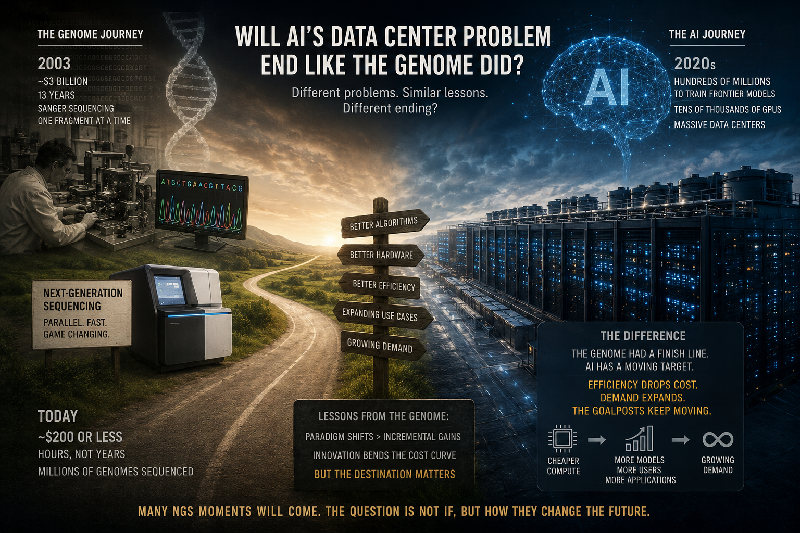

The barbeque question: will AI’s data center problem end like the genome did?
Notes from a conversation over smoke and charcoal, and what the data says about it
It happened somewhere between the second batch of skewers and the point where someone finally admitted the coals needed more time. Someone at the table—half paying attention to the grill, half to the group—said the thing that derailed the evening in the best way:
“You know, twenty years ago, sequencing a single human genome felt impossible. Now it’s routine. Is AI’s data center problem going to go the same way?”
Forks paused. It was a good question, the kind that sounds simple until you actually try to answer it.

The $3 Billion Genome
Rewind to 2003. The Human Genome Project had just wrapped after thirteen years and roughly $3 billion, reading out the three billion base pairs of human DNA one laborious Sanger-sequencing run at a time. It was a moonshot—international, decade-spanning, celebrated with press conferences.
Fast forward, and something remarkable happened to that cost curve. It didn’t just fall—it collapsed. Sequencing a human genome went from tens of millions of dollars to a few thousand, and today, in highly optimized settings, the cost is approaching only a few hundred dollars. That transformation didn’t happen because Sanger sequencing became incrementally better every year. It happened because the entire approach was reinvented. Next-generation sequencing arrived with a fundamentally different chemistry, reading millions of DNA fragments in parallel instead of one at a time. Genome sequencing didn’t simply become cheaper—it was replaced by something fundamentally better.
That was the story someone was telling around the grill. And the question hanging in the smoke was this:
Is AI’s compute crunch waiting for its own next-generation sequencing moment?
The Electron Problem
Here’s where the table split into two camps.
The optimists argued that something very genome-like is already happening in AI. Training costs aren’t falling simply because chips are getting faster—they’re falling because of genuine algorithmic breakthroughs. Over the past decade, researchers have repeatedly shown that smarter model architectures, improved optimization methods, and more efficient training strategies can dramatically reduce the amount of computation required to reach a given level of performance.
DeepSeek, for example, demonstrated that architectural redesign—not simply buying more GPUs—can substantially reduce training and inference costs while maintaining frontier-level capability. Hardware is evolving alongside these algorithms: every new generation of AI accelerators delivers meaningful improvements in throughput and energy efficiency, steadily pushing the cost of computation downward.
It sounds strikingly similar to the genome story: a stubborn bottleneck overcome not by brute force, but by better ideas.
Then the skeptic at the table—there’s always one—pointed out the catch, and it changed the entire shape of the discussion.
A genome has a finish line.
There are about three billion base pairs, full stop. Once sequencing became inexpensive, researchers didn’t need to read more DNA from each person—the computational target stayed fixed. Demand for sequencing certainly exploded, with millions of genomes now being sequenced around the world, but the amount of DNA contained in a human genome never changed. Every efficiency improvement made sequencing cheaper, faster, and more accessible without moving the goalposts.
AI has no comparable finish line.
When training becomes ten times cheaper, nobody simply trains yesterday’s model for one-tenth the cost and goes home. Instead, researchers build larger models, run more experiments, deploy more applications, and serve vastly more users. Economists have a name for this pattern: Jevons Paradox. Making something more efficient often doesn’t reduce total consumption—it increases it, because lower cost creates entirely new uses that were previously impractical.
Industry analysis increasingly points in this direction. Efficiency gains in AI are likely to be accompanied by an explosion in experimentation, deployment, and inference at scale. Even if each unit of computation becomes cheaper, the total demand for computation may continue to grow.
There’s another wrinkle as well.
Genome sequencing benefited from a paradigm shift that fundamentally replaced the previous technology. Modern computing also experienced enormous efficiency gains during the cloud-computing revolution, when organizations moved workloads from inefficient on-premises server rooms into highly optimized hyperscale data centers.
Frontier AI, however, largely begins inside those already-optimized facilities. The easy infrastructure gains have mostly been captured before today’s AI boom. The next improvements must come from genuinely harder engineering problems: better chip architectures, smarter model designs, improved scheduling, higher hardware utilization, more efficient networking, advanced cooling, and entirely new approaches to computation itself.
So, Same Story or Different One?
By the time the coals were dying down, the table had more or less landed here: the mechanism rhymes.
Paradigm-breaking innovations—not incremental scaling—are what truly bend cost curves. AI is already experiencing several of them through new architectures, sparse models, improved training methods, specialized hardware, and increasingly sophisticated software engineering. In that sense, the genome story is repeating.
But the ending may be very different.
Genome sequencing is fundamentally a fixed-length problem. Every human genome contains roughly the same amount of DNA to read. Intelligence, by contrast, is an open-ended problem. Every time AI becomes cheaper to train or deploy, researchers don’t simply stop. They build more capable systems, create entirely new applications, expand inference to billions of users, and tackle problems that previously seemed out of reach. The goalposts keep moving.
So the honest answer isn’t that AI will have one dramatic “next-generation sequencing” moment after which the data-center problem disappears.
It’s more likely that AI will experience many such moments. Each breakthrough will make computation dramatically more efficient than before. But unlike genome sequencing, those gains may be continually absorbed by expanding demand, leaving society with ever more capable AI systems—yet not necessarily fewer data centers.
Even researchers who study this professionally disagree about how the balance will play out. Some believe algorithmic innovation and specialized hardware will continue to outpace demand growth. Others argue that energy availability, manufacturing capacity, and physical limits on computing will eventually become the dominant constraints. The debate remains very much alive.
Which, if you think about it, is a pretty good note to end a barbeque conversation on: not a tidy answer, but a much better question than the one you started with.
Written after (and inspired by) an actual argument over the grill about whether we’re solving AI’s biggest infrastructure problem—or simply discovering how big “solved” needs to become.